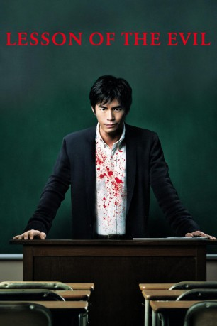

#3054 Lesson of the Evil
 
 IMDB-Wertung: 6.7 / 10
IMDB-Wertung: 6.7 / 10  Metascore: 0
Metascore: 0 
Englischlehrer Hasumi ist jung, attraktiv und wird von Schülern wie auch Kollegen vergöttert. Doch hinter seiner charmanten Fassade verbirgt sich ein gestörter Soziopath: Mitgefühl und ein Gewissen sind Hasumi fremd. Auf Vergehen wie Schummeln oder Mobbing folgen daher bald Maßregelungen der besonderen Art: Er erpresst, foltert und ermordet seine Schüler, um im Unterricht wieder Ordnung herzustellen. Auch cholerische Eltern und misstrauische Kollegen müssen dran glauben, bis er sich ganz und gar in seinem Blutrausch verliert und ein nicht mehr zu vertuschendes Massaker begeht. Aber selbst in den Fängen der Polizei weiß sich Hasumi zu helfen ...
Jahr: 2012
Dauer: 128 Minuten
FSK: 18
Land: Japan Studio: Rapid Eye MoviesTonspuren:
Untertitel: Deutsch,
Auflösung: 1080p (1920x800) Größe: 11468 MB
Genre: Thriller, Horror
Regisseur: Takashi Miike
Drehbuch: Yûsuke Kishi, Takashi Miike
Soundtrack: Kôji Endô
Darsteller:
 Takayuki Yamada als Tetsuro Shibahara
Takayuki Yamada als Tetsuro Shibahara- Fumi Nikaidô als Reika Katagiri
- Howard Harris als Chief Trading Officer
- Ruth Sundell als Stock Trader
- Jodi Lynn Smith als Suzanna
 Shôta Sometani als Keisuke Hayami
Shôta Sometani als Keisuke Hayami- Hideaki Itô als Seiji Hasumi
- Nanami Fujimoto als
- Daniel Genalo als Stock Trader
- Toshi Takeuchi als Akira Suzuki
- Mayu Matsuoka als Satomi Shirai
- Mitsuru Fukikoshi als Masanobu Tsurii
- Yukito Nishii als Kakeru Takagi
- Kento Hayashi als Masahiko Maejima
- Atsushi Arai als Takuto Kato
- Kôdai Asaka als Yuichieo Nagoshi
- Kaoru Fujiwara als
- Ken'ichi Takitô als
- Rio Kanno als Yuzuka Takahashi
- Sairi Itô als
- Kasumi Yamaya als
 Takehiro Hira als Takeki Kume
Takehiro Hira als Takeki Kume- Asuka Kudô als
- Ryô Iwamatsu als Masao Nadamori
- Noriko Nakagoshi als Satoko Mizuochi
- Tasuku Nagase als Shuhei Naruse
- Sairi Itoh als Ayumi Nagai
- Hiroki Nakajima als
- Jab als Clay Chambers
- Fujiko Kojima als Misaki Abe
- Tatsuya Kishida als
- Erina Mizuno als Miya Yasuhara
- Yukino Kishii als Hoshida
- Narumi Akizuki als Ari Kashiwabara
- Runa Natsui als
- Michael Edward Murphy als Stock Trader
- Riku Ozeki als Kengo Watarai
- Kenta Darvish als Masahiro Tadenuma
- Takemi Fujii als Rina Kiyota
- Tôko Miura als
- Yuga Akiyama als Hajime Wakimura
- Airi Yamamoto als
- Kazuma Takeda als
- Ryo Yokoyama als
- Rena Kanzaki als Madoka
- Raiki Nemoto als Nakamura
- Sakura Hayashi als
- Mizuho Kaneo als
- Mika Ayano als
- Kôki Horikoshi als
Datei: X:\FSK18-Eastern\Lesson of the Evil (2012, FSK18, 1920x800).mkv seit 20.01.2016
Festplatte: FSK18
 Es gibt insgesamt 102 Filme in der Gruppe 'FSK18-Eastern'
Es gibt insgesamt 102 Filme in der Gruppe 'FSK18-Eastern'